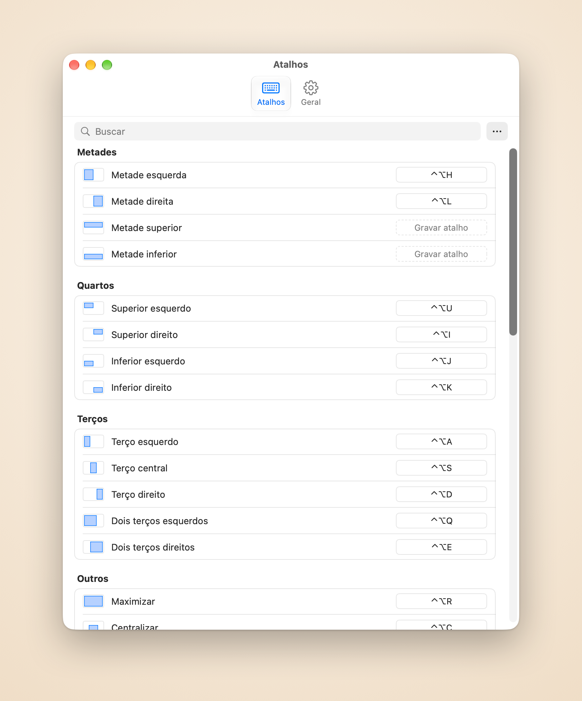

Organize as janelas que você está usando
O Piccolo lembra quais janelas você usou por último. Um atalho coloca as duas, três ou seis mais recentes lado a lado ou em grade na tela atual, sem escolher uma por uma.
O Piccolo organiza as janelas que você acabou de usar e mantém sua mesa arrumada, tudo pelo teclado.
Grátis por 14 dias, sem cartão de crédito
Comprar por US$ 4,99
O Piccolo lembra quais janelas você usou por último. Um atalho coloca as duas, três ou seis mais recentes lado a lado ou em grade na tela atual, sem escolher uma por uma.
Depois que o Piccolo organiza um grupo, um atalho move o divisor ao lado da janela em foco e as vizinhas acompanham, sem vãos nem sobreposições. Trocar janela troca duas janelas de lugar e o layout continua o mesmo.
Segure um atalho e um destaque mostra o destino. Solte para mover a janela até lá, ou pressione Esc e nada muda.
Pressione de novo para 2/3, depois 1/3
⌃⌥H ⌃⌥L
Uma tecla para cada canto
⌃⌥U ⌃⌥I ⌃⌥J ⌃⌥K
Três colunas em telas largas
⌃⌥A ⌃⌥S ⌃⌥D
Espaço para a janela principal
⌃⌥Q ⌃⌥E
Ocupa a tela inteira
⌃⌥R
Mesmo tamanho, bem no meio
⌃⌥C
Mesmo tamanho e lugar relativos
⌃⌥[ ⌃⌥] ⌃⌥⌘ + setas
Desenhe as suas na tela
⌃⌥W
Volta para onde estava antes
⌃⌥⌫
Clique em uma ação nos Ajustes e pressione as teclas que quiser. Grades e áreas personalizadas também ganham atalhos próprios, e usuários avançados podem editar o arquivo de configuração à mão.

Todas as ações em uma só lista. Clique em uma linha, pressione as teclas e pronto, está salvo. ⌘Z desfaz qualquer alteração.
As janelas deslizam até o lugar e quicam de leve quando não há para onde ir. Escolha a velocidade ou desative.
Quando as janelas não preenchem a grade, escolha se a última se estica para baixo ou para o lado: colunas primeiro para uma tela larga, linhas primeiro para uma vertical.
Deixe uma margem entre as janelas e nas bordas, para que as sombras não se acumulem em faixas escuras.
English, 简体中文, 繁體中文, 日本語, Français, Español, Português e Deutsch.
Sem conta, sem análises. Só a verificação da licença e a de atualizações usam a internet.
Preço de lançamento
US$4.99 compra única · US$ 9,99 após o lançamento
Os pedidos são processados pela Dodo Payments, revendedora oficial, que cuida do pagamento, dos impostos e das notas.
macOS 14 ou posterior e a permissão de Acessibilidade: o Piccolo move as janelas de outros apps pela API de Acessibilidade do macOS, e sem ela nenhuma janela se move.
O Piccolo move e redimensiona as janelas de outros apps pela API de Acessibilidade do macOS, e sem a permissão nenhuma janela se move. Ele a usa só para ler e mudar a posição e o tamanho das janelas. Você permite em Ajustes do Sistema, Privacidade e Segurança, Acessibilidade.
Nada mais sai do seu Mac: sem análises, sem relatórios de falhas. Suas janelas, atalhos e arquivo de configuração ficam no computador. Veja a Política de Privacidade (em inglês).
Uma licença cobre 3 Macs.
No Mac que você quer liberar, abra os Ajustes, vá em Geral e escolha “Desativar neste Mac”. Depois ative a licença no outro Mac.
Você pode pedir reembolso em até 30 dias após a compra, sem precisar explicar. Escreva para support@damao.io com o número do pedido. Veja a Política de Reembolso (em inglês).